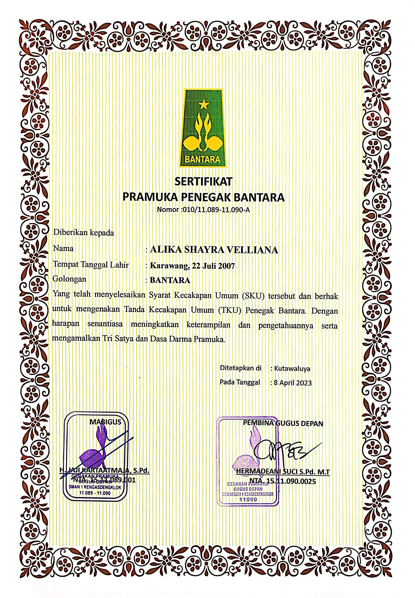
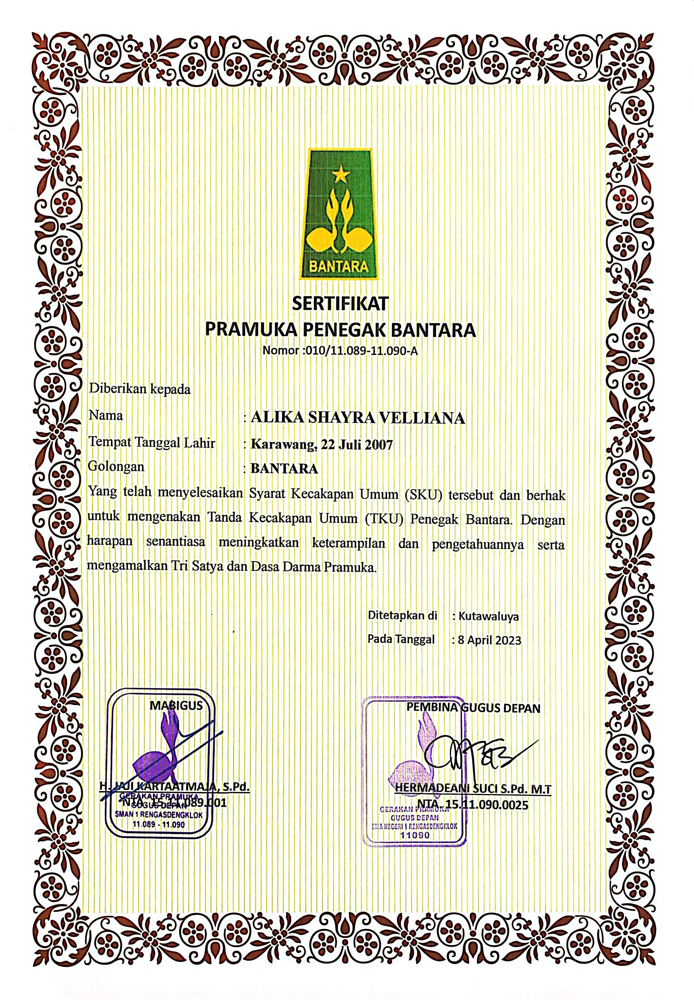
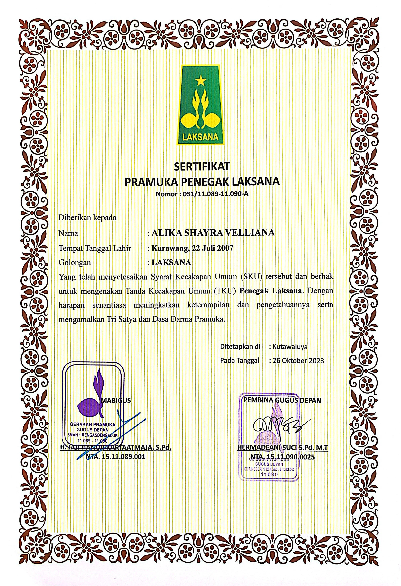
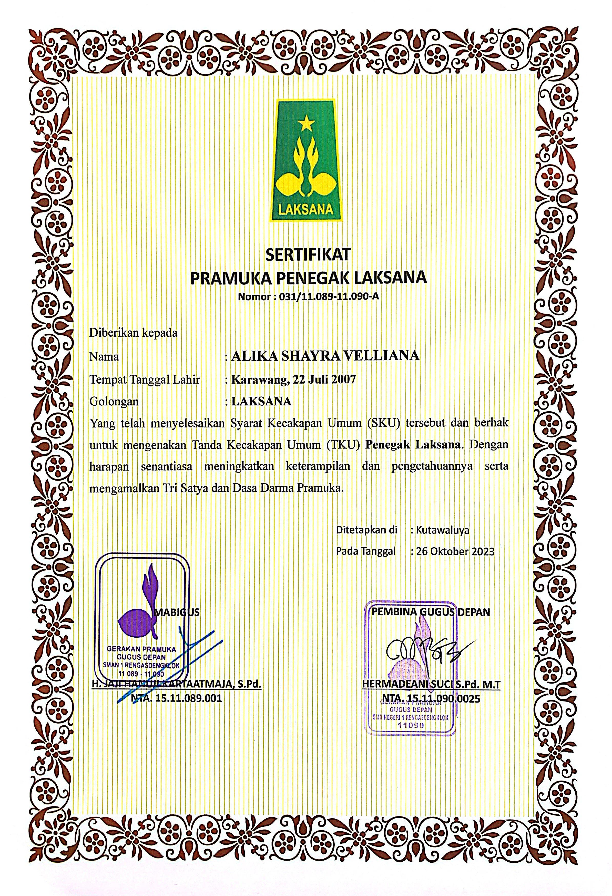
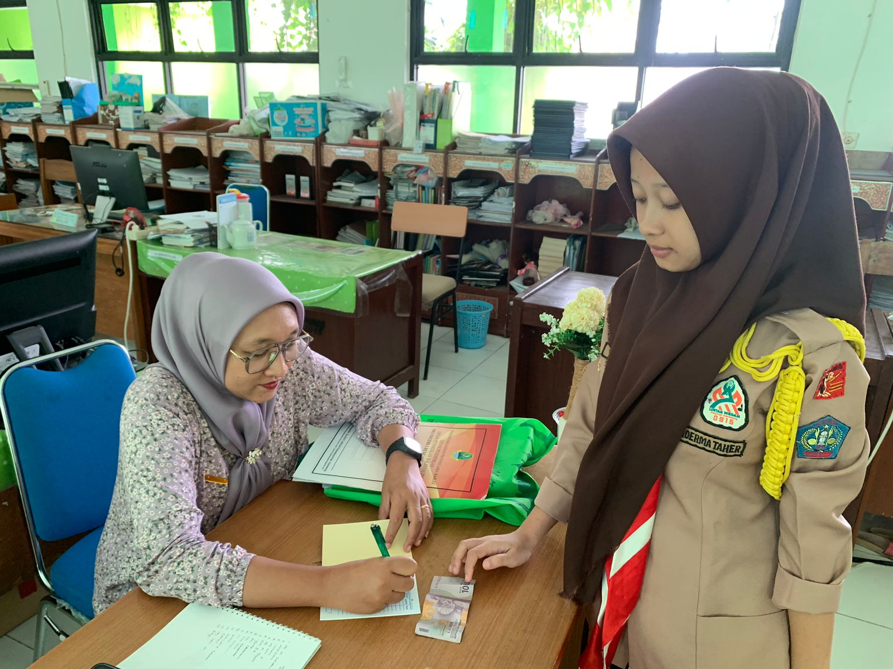
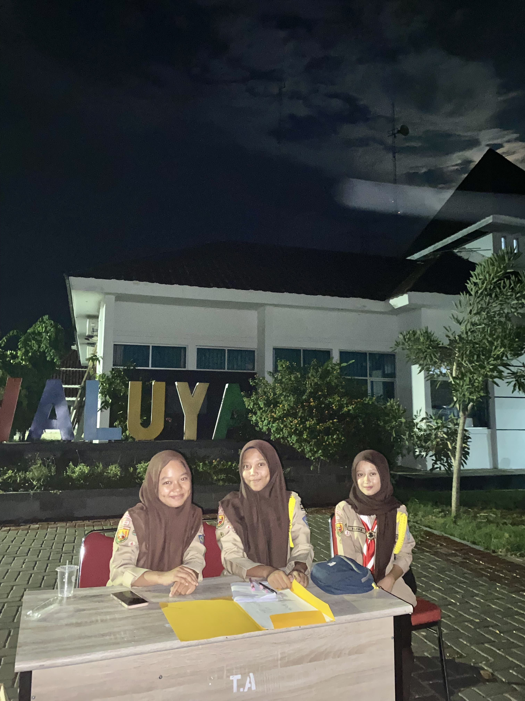

Profile Diri

Alika Shayra Velliana
Hallo perkenalkan saya Alika Shayra Velliana siswi SMAN 1 Rengasdengklok, saya lahir di Karawang 22 Juli 2007. Hobby saya menggambar, dan menyanyi
Pendidikan Formal
- SDN Dewisari 1
- SMPN 1 Kutawaluya
- SMAN 1 Rengasdengklok
Pendidikan Non Formal
- Mengikuti kegiatan Pramuka
Organisasi
- Pramuka
- Pramuka penegak laksana
Pencapaian SKU/TKU

Pencapaian Penegak Bantara
Berikut ini adalah Proses pencapaian SKU tingkat Bantara dan Laksana


 


Kenaikan tingkat penegak laksana


 


Pencapaian SKK/TKK

Dokumentasi pencapaian bidang-bidang TKK
Bidang agama, mental, moral, spiritual, pembentukan pribadi dan watak

untuk mencapai TKK sholat, saya telas memahami rukun, syarat dan yang membatalkan sholat

untuk mencapai TKK penabung saya, menabung kepada pembina putri

Bidang patriotisme dan seni budaya

untuk mencapai TKK pengatur rumah, saya merapihkan gorden, dan menyapu lantai

untuk mencapai TKK Menyanyi, saya dapat mengetahui lagu lagu daerah dan mengaplikasikannya
Bidang ketangkasan dan kesehatan

untuk mencapai TKK perenang, saya dapat melakukan gaya gaya dalam berenang dan mengaplikasikannya

untuk mencapai TKK pengembaraan, saya berhasil menempuh perjalanan sebanyak 28km dilaksanakan saat kegiatan lintas medan VI
Bidang keterampilan dan teknik pembangunan

untuk mencapai TKK peternak kelinci, saya memelihara 2 ekor kelinci jan tan 1 dan betina 1, di kembangkan sampai mempunyai anak

Bidang sosial, perikemanusiaan,gotong-royong, ketertiban masyarakat, perdamaian dunia dan lingkungan hidup

untuk mencapai TKK PPPK, Saya dapat mempraktekan cara membidai dan membuat tandu

untuk mencapai TKK Pengaman lalu lintas, saya dapat memberi penjelasan tentang peraturan lalu lintas yang berlaku bagi pengemudi pengemudi kendaraan bermotor

untuk mencapai TKK ini, saya dapat tahu cara menerima, duduk, berbicara, memperkenalkan dan mengantar tamu dan juga dapat mengatur meja tamu
Keikutsertaan Kegiatan
Kegiatan PAM Lebaran/Karya Bakti Pramuka

Kegiatan SAKA BAKTI HUSADA

Kegiatan Jamboree On The Air (JOTA) dan Jamboree On Internet (JOTI)

Kegiatan Penegak Pandega Siaga Bencana

Kegiatan Gema Ramadhan

Legalitas
Telah Menyelesaikan Tingkatan akhir Pramuka Penegak
Telah Menyelesaikan tingkatan TKK pada 5 bidang kecakapan, mulai dari tingkat Purwa, Madya dan ada beberapa di tingkat Utama

Project Produktif
Berikut adalah Projek Produktif membuat tanaman kangkung dengan media tanam tanah
 Video Project tanaman
Video Project tanaman
Penguasaan bahasa asing
Berikut adalah Penguasaan bahasa Asing, wawancara menggunakan bahasa inggris
 Video Bahasa Asing
Video Bahasa Asing